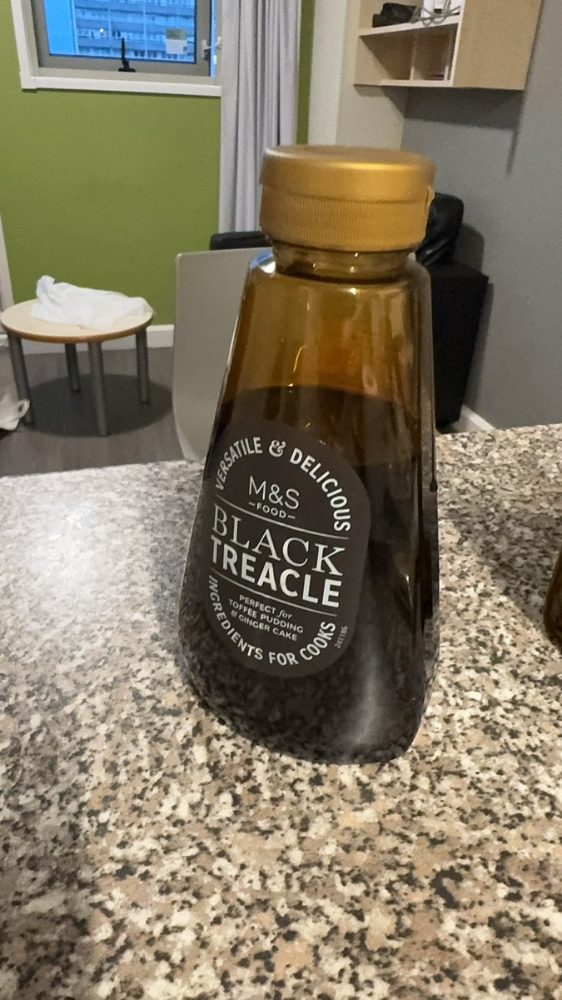
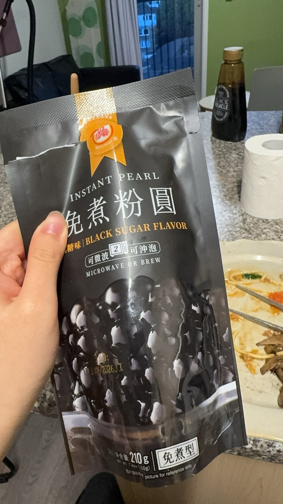
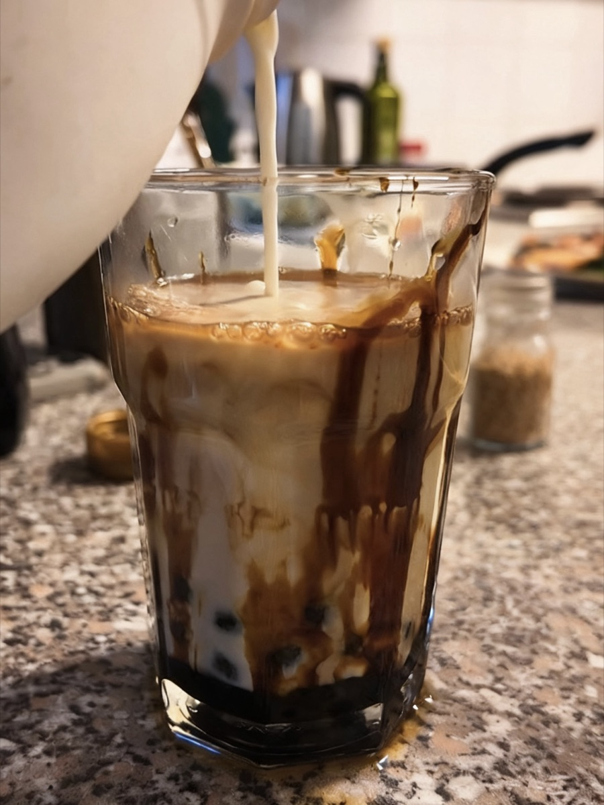

Brown sugar boba, step by step



Drinks and dinners from my little kitchen in London.
Hi, I'm Yuhan. I moved to London in 2025 for my MA at King's College London, and I cook most of my meals at home. When I find a drink I love in a café, I try to make it in my own kitchen. I haven't worked in a café or a kitchen yet, and I would love to learn from a professional team.


